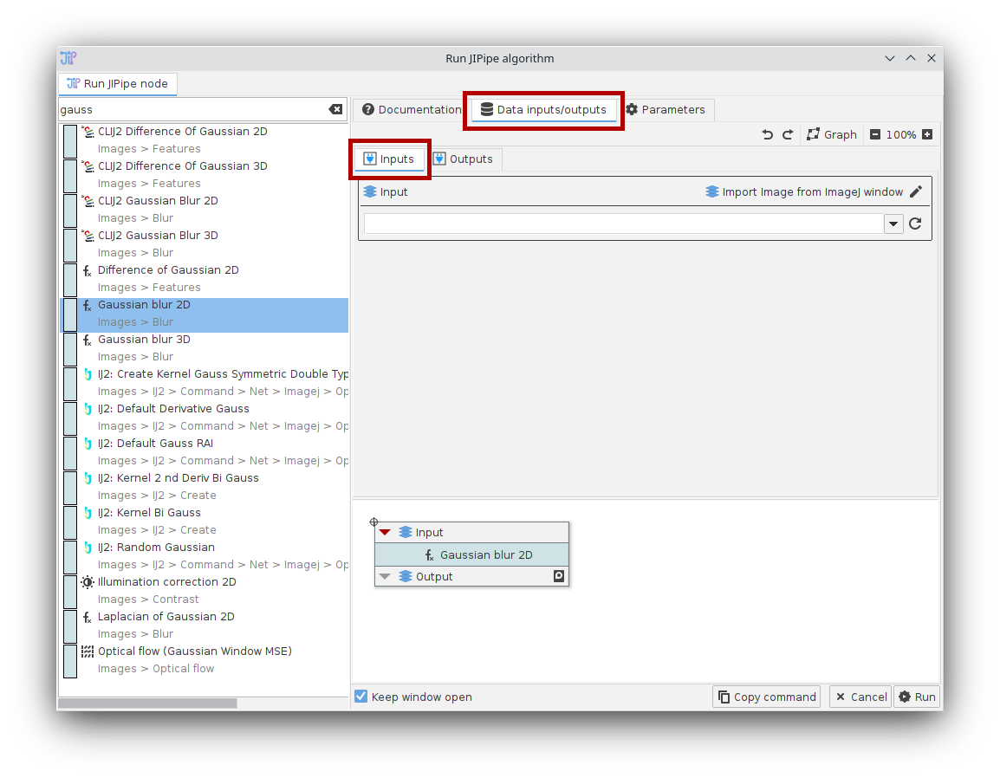
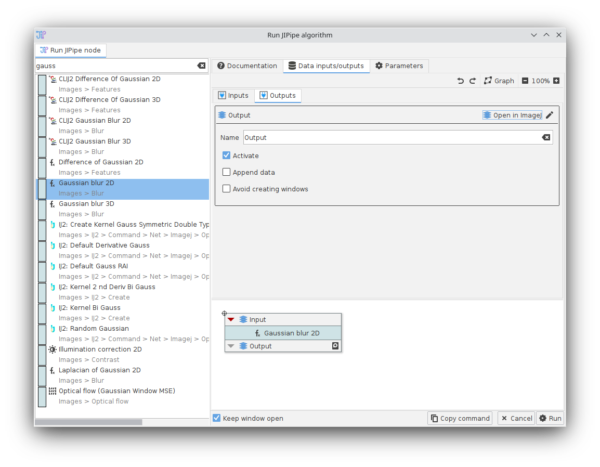
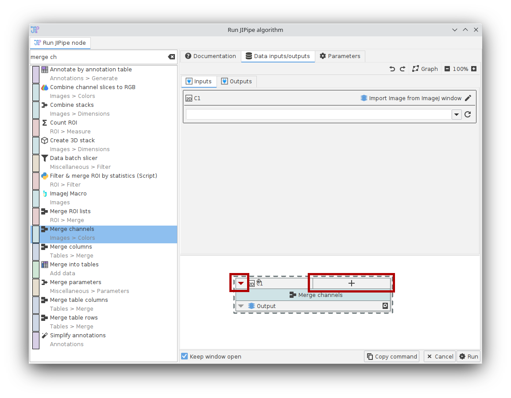

ImageJ integration
ImageJ to JIPipe
JIPipe integrates commonly used data types and popular algorithms from ImageJ. If an algorithm is not available for JIPipe, you can still run them via the Macro node. There is also a Python script node available that behaves similar to the macro node.
JIPipe to ImageJ
JIPipe algorithms and pipelines can be executed from within an ImageJ environment. There are two ways JIPipe integrates back into ImageJ:
- You can run a pipeline project from a macro/command
- You can run JIPipe algorithms from a macro/command if the slot data types are supported by ImageJ
Running a pipeline
You can run an JIPipe pipeline via the command Plugins > JIPipe > Run JIPipe project. It will ask you
the project file and the output directory.
To run the command via a macro, run:
run("Run JIPipe project", "projectFile=<Project>, outputDirectory=<Directory>, threads=<Threads>")
There can be issues using the macro recorder depending on which ImageJ algorithms are used. This issue is especially prevalent in ImageJ macro algorithm nodes.
You can also run JIPipe in headless-mode just like any ImageJ2 algorithm:
./ImageJ-linux64 --headless --ij2 --run "Run JIPipe project" 'projectFile="<Project>", outputDirectory="<Directory>", threads=<Threads>'
While JIPipe works in Headless-mode, some ImageJ algorithms don’t. You will get an error message if an algorithm requires a graphical environment.
Running a single node
JIPipe algorithms can be run from ImageJ macros/commands if the slot data types are compatible with ImageJ.
By default, this includes any image data type, result tables, and regions of interest (via ROIManager).
On running the command Plugins > JIPipe > Run JIPipe algorithm, a dialog will open that will let you select a JIPipe node
and run it within ImageJ.

Providing inputs
The JIPipe node is provided with inputs via an importer that transforms non-JIPipe data into items that can be handled by JIPipe. We advise to review the settings by selecting the Data inputs/outputs tab and switching to the Inputs view. The editor will display a preview of the JIPipe node and a list of inputs and related settings.
You can change the importer by clicking the edit (pen) button at the top right corner of each input. Based on the selected importer, the settings within the box change to, for example, allow to select an image window.
If you want to specify more advanced data with text and data annotations, choose the “Data table import” option. You have to provide a path to a valid data table directory in the “Name” field.

Output data is created according to the slot name. For example if the output slot name is Output,
the created image window will also be named Output.
Exporting outputs
Any JIPipe output is exported back into ImageJ. Outputs are managed in a similar manner to inputs by switching to the Outputs tab. Here, you can select the type of exporter and change various export parameters.
If you want to export data as JIPipe data table, select the “Data table export” exporter item. If the name contains an absolute path, the data table will be written into it. Otherwise, JIPipe will create a temporary directory where outputs are written. The temporary directory is changeable in the JIPipe settings.

Adding/removing slots
Some nodes allow the modification of their slots. To add new slots, click the + button in the node preview at the bottom view. To edit or delete a slot, click the arrow button next to the slot and select the appropriate operation.

ImageJ macro support
To run the command via a macro, run:
run("Run JIPipe algorithm", "nodeId=<Algorithm>, parameters=<Parameters>, inputs=<Inputs>, outputs=<Outputs>")
The algorithm ID can be looked up via the plugin manager. are provided as string in JSON format. The JSON data should have following structure:
The parameters, inputs, and outputs are provided in JSON format:
parameterscontains the node parameters. These can be obtained by copying a node into the clipboard. You can leave out unused parameters to let JIPipe fill in the default valueinputsassigns to each input slot the importer parametersoutputsassigns to each output the output parameters
Use the “Copy command” button in the “Run JIPipe algorithm” GUI command to quickly create a valid macro for your parameters.
Creating an ImageJ menu entry for a node
If you are a developer of a JIPipe node (Java only) and want to provide your node as separate entry in the ImageJ menu, you can use our Java API to create custom SciJava commands that provide a similar UI to the single algorithm run. You just have to inherit from JIPipeRunCustomAlgorithmCommand and provide the constructor with the node ID. Then add the Plugin annotation just as with any SciJava command.
Currently known issues
There may be issues if multiple ROI or result table outputs are generated. JIPipe will merge multiple ROI List data items into one Results Table.
There can be issues using the macro recorder depending on which ImageJ algorithm is executed. This issue is especially prevalent in ImageJ macro algorithm nodes.